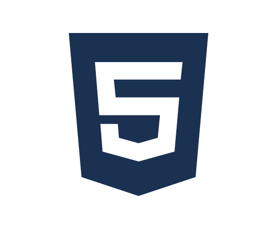
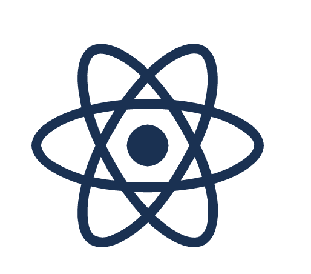
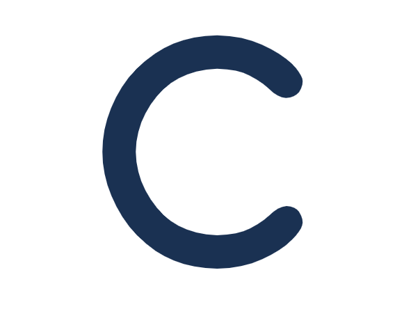

Hello! I'm Kartik, a High School Freshman and an
aspiring software engineer.
I've always a huge affinity for mathematics, and recently
started learning how to program.
My major interests lie in developing AI/ML and mobile apps through
consistent practice and effort. I'm also very
interested in Data Science and Mathematics.
During my free time, I love to play badminton, read research papers, and learn new programming
languages.



Made by Kartik Nayak © 2022